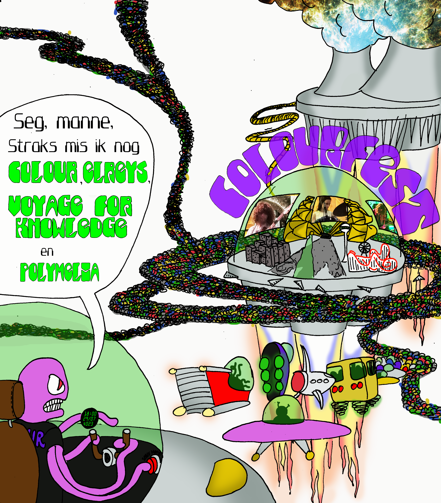
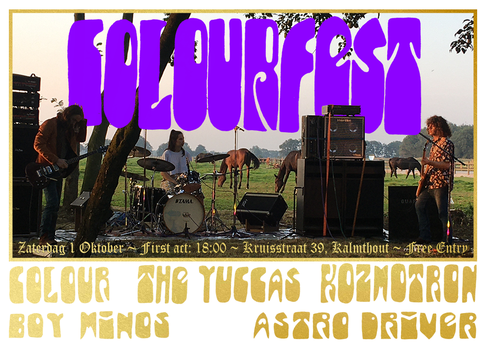
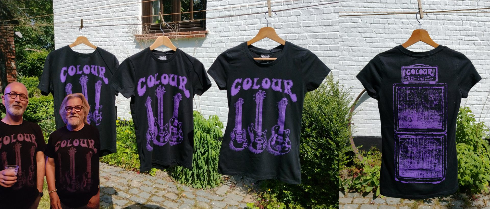
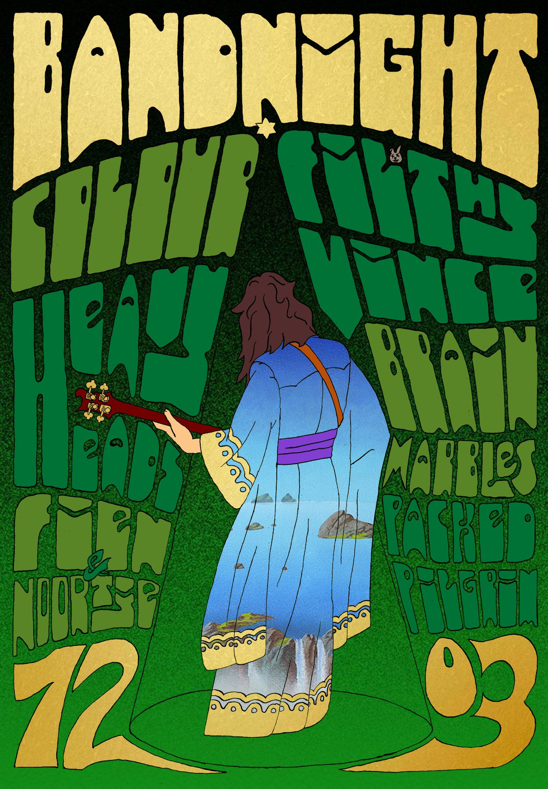
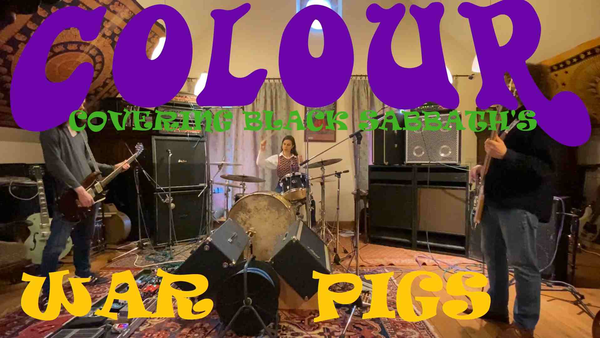
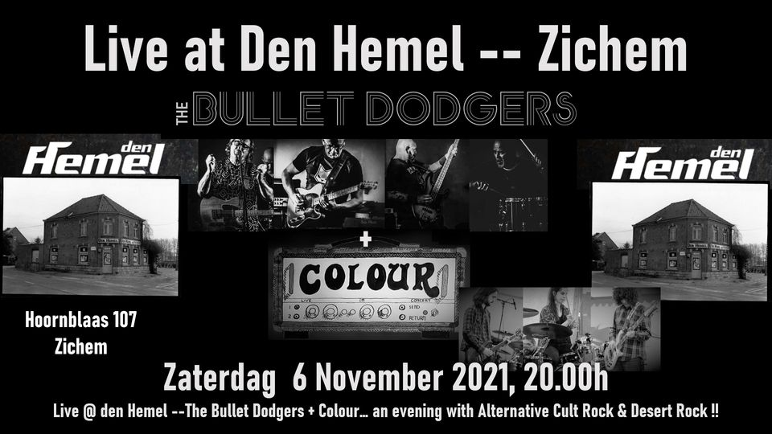
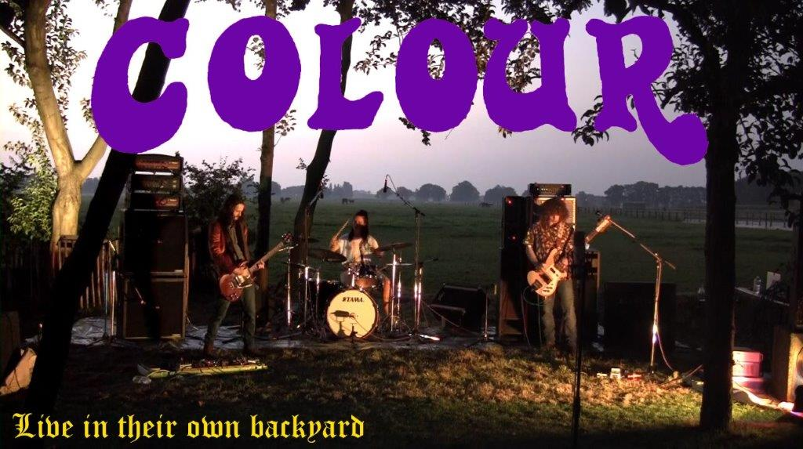

Colourfest is back!
We have released our very first album! Check it out on Spotify, Our Youtube, 666MrDoom's Youtube and Bandcamp!
We are hosting our own festival called Colourfest!
The line-up wil be Colour, Kozmotron, The Yuccas, Astrodriver and Boy Minos. We invite all to come and enjoy epic bands being blasted through our epic soundsystem! The first act will start at 18:00 on Oktobre first. There wil be homemade food and drink! Bring money!
We sell shirts now!
These shirts are eco-friendly and fair and come in many sizes, including yours! They're made in India by people whose kids get to go to school, silk-screened in Belgium and designed by Thomas, our bass-player. They're €20, buy them at shows or send us a message!
Behold! Our first 20 minute prog epic! As big fans of the progressive rock bands of yesteryear, we set out to make our own prog epic inspired by songs as Close to the Edge, Hemispheres, a Plague of Lighthouse Keepers, Supper's Ready, Thick as a Brick And many, many more. Through the Leaves concludes the story of the Traveler, and embodies an important chapter in Colour's deep and, dare I say, colourful lore ( ͡° ͜ʖ ͡°)
In honor of Tim's EPIC new guitar, we've recorded this jam. Only the opening bass riff was written, the rest is improvised and inspired by the flow state that radiates from this 12 stringed pearl of the universe. Tim's new guitar is a one-of-a-kind RTO prototype. Featuring hybrid neck-through and hollow-body construction, twelve strings, US patented RTO twelve string "Relative Tune" tremolo bridge, carbon fiber reinforced neck, custom hardware and exotic woods. Enjoy our first go at this kind of jammy psychedelic rock and enjoy Tim's new guitar! Thanks RTO!
Colour wil be playing on the Straatfeesten, Kalmthout on Sunday June 5th. Check it out!
New gig in our hometown!
We'll be sharing the stage with some awesome bands. Check it out! (Poster design by yours truely)
New gig at Moby Dick has, as of now, been fixed 2/7 Check it out!

We did a cover of Black Sabbath's War Pigs. Check it out!
A new gig is in the bag!
A fellow Belgian hardrock band called the Bullet Dodgers has kindly offered us the opportunity to open for them at Café Den Hemel in Zichem. The show will be the sixth of november, starting at 20:00h. Hope to see some of you there!
We uploaded a video on YouTube, showing Colour's second gig in full.
Colour is playing September 25 at Easywood!
Easywood is a free festival organised by the kind people at café the zoete inval, Kalmthout. Its gracious host Koen has invited Colour to play from 15:15 to 16:15. Hope to see you there!